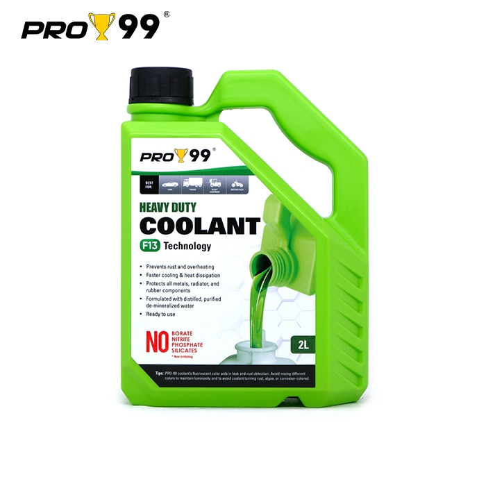

Fluids · 4 October 2026
PRO99 heavy duty coolant.
The listing is PRO99 Heavy Duty OAT coolant, ready to use, green, F13, 2 liters, for cars and motorcycles. The listing code is PCF13-2LG. That Shopee page is where you buy it.

The bottle in the seller photo is marked 2L and F13. The label says the coolant is ready to use and made with distilled, purified, de-mineralized water. It also says the formula leaves out borate, nitrite, phosphate, and silicates. Those lines are the label’s claims.
The same label says the fluorescent color helps you spot a leak, and it tells you not to mix different coolant colors. Check the color already in the reservoir and the owner’s manual before you pour. Ready to use means this bottle is not a concentrate you dilute.
Check this before you buy
- You want the green 2 liter bottle, not a 1 liter bottle in another color.
- The coolant already in the bike is green, or the manual allows this fill.
- You are topping up or refilling. You are not mixing two colors in one reservoir.
The button opens the Shopee shop.
More guides
RAC all-purpose degreaser · 4-in-1 jump starter · DJI Osmo 360 II